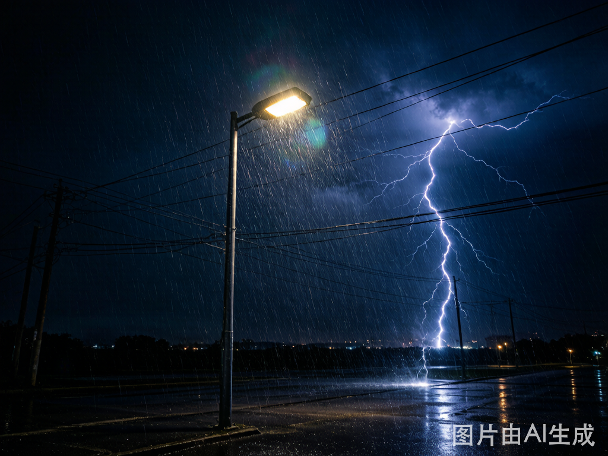
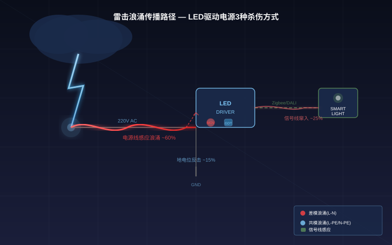
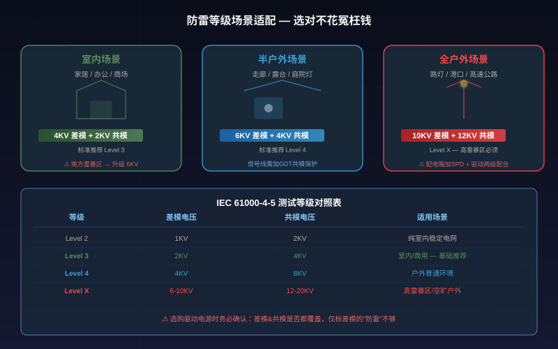
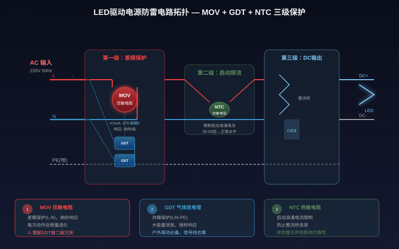

The Real Reason Your LED Lights Die After Thunderstorms
Every summer, project managers face the same nightmare: after one thunderstorm, LED street lights, advertising signs, and even indoor smart lights all die at once. You replace them, and next month's storm kills another batch — repair costs exceed the lighting budget.
90% of LED lightning damage isn't from direct strikes. Induced surge voltage on power lines instantly destroys internal driver components. Choosing a driver with proper surge protection specs can save one-third of your project's after-sales costs.
3 Surge Attack Paths That Kill LED Drivers
Path 1: Power Line Induced Surge — The Invisible Killer (~60% of damage)
When lightning hits nearby ground or buildings, it induces transient high-voltage pulses on 220V AC supply lines. These pulses last microseconds but peak at thousands of volts — far exceeding LED driver component tolerances.
If LED street lights share a common power line, surge propagates along it. One lightning event = entire row of dead lights. Not coincidence — it's physics.

Path 2: Signal Line Intrusion — Smart Lights' "Second Wound" (~25%)
Smart lighting systems have Zigbee/BLE/Wi-Fi control lines beyond power lines. Lightning-induced surges can invade through these low-voltage signal paths, causing:
- DALI/Zigbee communication chip breakdown
- Dimming interface failure (light works but can't dim)
- MCU reset or freeze
Many engineers add surge protection to power lines but forget signal lines. The light survives but becomes "brain-dead."
Path 3: Ground Potential Backstrike — Self-Inflicted Damage (~15%)
When lightning current enters ground, surrounding ground potential spikes instantly. If LED light grounding resistance is high (>10Ω), the driver's ground terminal becomes a high-voltage entry point — surge invades from ground wire "backwards."
| Surge Path | Invasion Method | Typical Damage | Share |
|---|---|---|---|
| Power line induction | Transient HV on 220V | Rectifier/cap breakdown | ~60% |
| Signal line intrusion | Low-voltage comm lines | Comm chip/dim interface | ~25% |
| Ground backstrike | Poor grounding | MCU/isolation failure | ~15% |
How to Choose Surge Protection Level: 4KV/6KV/10KV
IEC 61000-4-5 Test Levels
LED driver surge immunity follows IEC 61000-4-5 (GB/T 17626.5 in China):
| Level | Differential Mode | Common Mode | Application |
|---|---|---|---|
| Level 2 | 1KV | 2KV | Indoor, stable grid |
| Level 3 | 2KV | 4KV | General indoor/commercial |
| Level 4 | 4KV | 8KV | Outdoor general environment |
| Level X | 6-10KV | 12-20KV | High thunderstorm/open outdoor |

Indoor smart lights (home/office): 4KV differential + 2KV common mode is sufficient. Indoor buildings have lightning protection systems. But in high-thunderstorm regions (South China), upgrade to 6KV differential.
Outdoor street/landscape lights: Start with 6KV differential + 4KV common mode minimum. Open areas lack building shielding. Highway, port, and open plaza scenarios need 10KV differential.
Critical warning: Many drivers claim "surge protection" but only cover differential mode (L-N). Common mode (L-PE/N-PE) protection is missing. Common mode surges cause mass LED failures — always verify both modes are covered.
3 Key Surge Protection Components
MOV (Metal Oxide Varistor) — First Defense Line
MOV is paralleled at the power input. Normally near-zero conductivity; during surge, it instantly conducts to discharge energy.
- Varistor voltage (V1mA): 470-620V for 220V AC systems
- Current capacity: 100A for 4KV, 200A for 6KV, 500A+ for 10KV
- Aging concern: MOV degrades slightly each activation. Quality drivers add GDT as secondary protection
GDT (Gas Discharge Tube) — Common Mode Main Force
GDT is paralleled between L-PE and N-PE, specifically targeting common mode surges. Slower response than MOV (microsecond vs nanosecond) but handles larger energy — essential for outdoor drivers.
- Select 600V breakdown voltage for 220V AC
- Smart communication interfaces need GDT on signal-to-ground lines too
NTC Thermistor — Startup Current Limiting
Switching power supplies have massive startup surge current (30-50x normal). NTC limits this. Not a lightning protection component per se, but NTC failure can destroy the rectifier bridge independently.

FAQ
Q: Do indoor smart lights need surge protection?
A: Yes. In high-thunderstorm regions, indoor power line surges can reach 2-4KV. Minimum 4KV differential mode immunity. Northern regions have fewer thunderstorms but grid switching surges — still recommend 2KV+.
Q: SPD vs driver built-in protection?
A: Driver internal protection (MOV+GDT) is device-level — fast response, limited capacity. SPD is system-level — installed in distribution box, handles larger energy. Outdoor projects need two-stage coordination: SPD (B/C level) in distribution box + 6KV+ surge-rated driver.
Q: How much does surge-rated driver cost vs standard?
A: 6KV-rated costs ~15-25 RMB more per unit than equivalent non-rated. One thunderstorm damage repair (labor + parts + reinstall) far exceeds 50 RMB. ROI is clear — skipping surge protection in outdoor projects saves pennies, loses dollars.
Key Takeaways
- 90% of LED lightning damage comes from power line induced surges, not direct strikes
- Signal lines (Zigbee/DALI) also need common mode protection — otherwise lights survive but "lose their brain"
- Indoor: 4KV differential minimum; outdoor: 6KV+; high thunderstorm regions: 10KV
- Verify both differential and common mode coverage — "surge-rated" with only differential isn't enough
- Outdoor projects: SPD + surge-rated driver two-stage coordination eliminates blind spots
For surge-rated LED driver selection support, contact Nexlamp engineering team: +86 138-2549-6855.